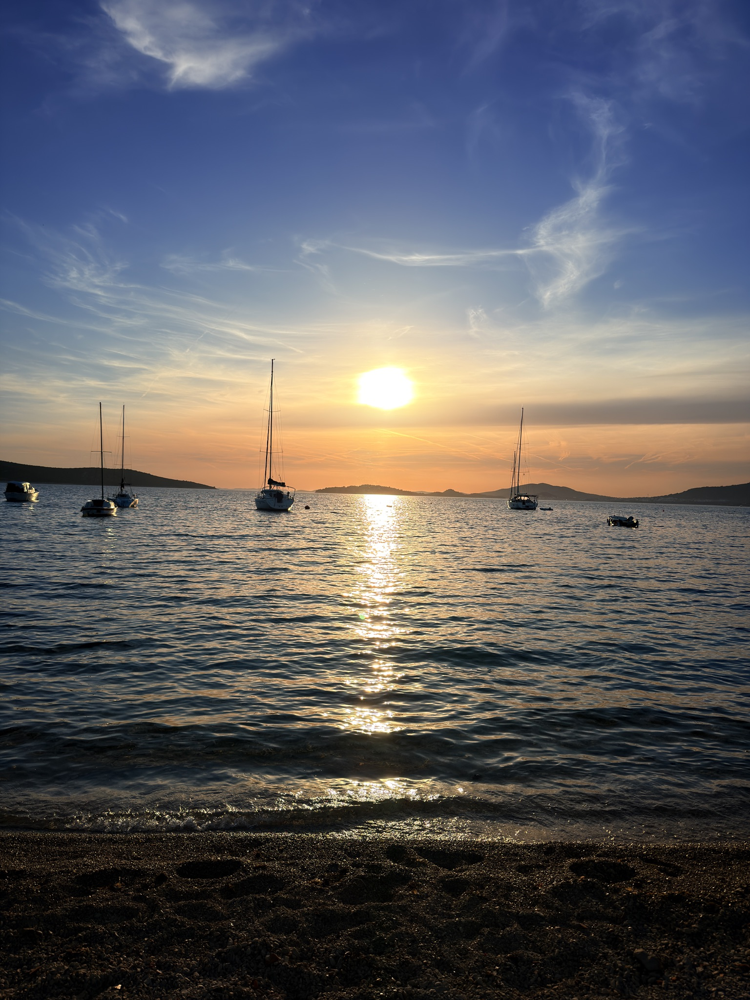
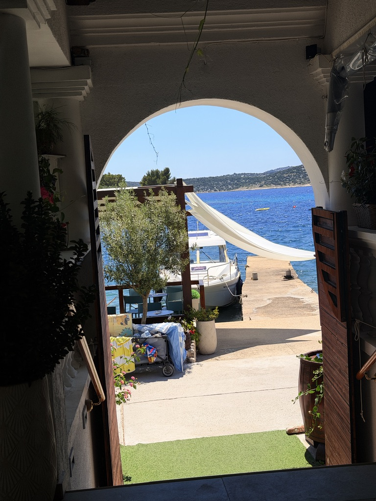
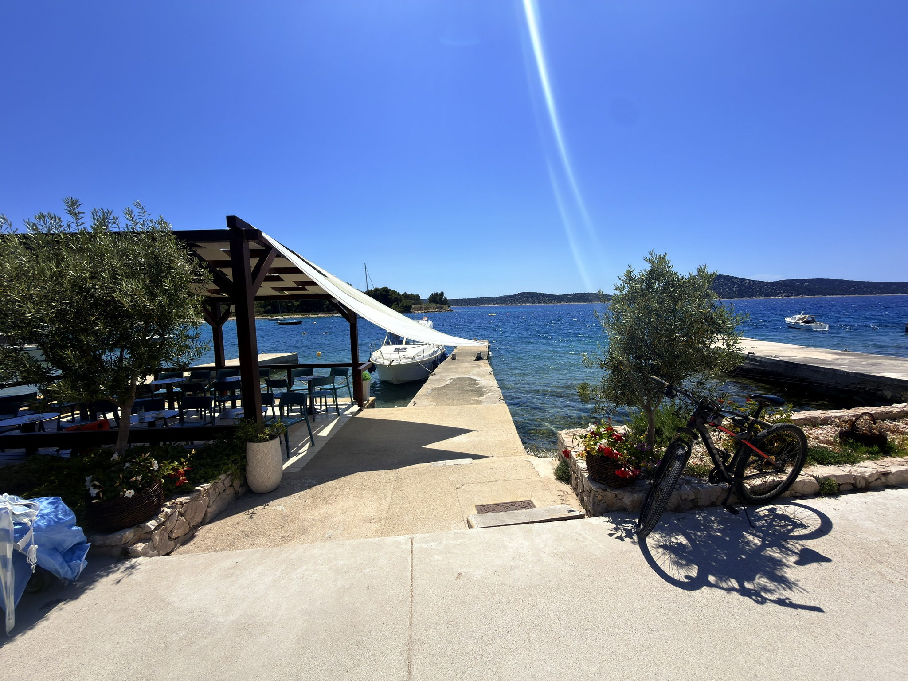
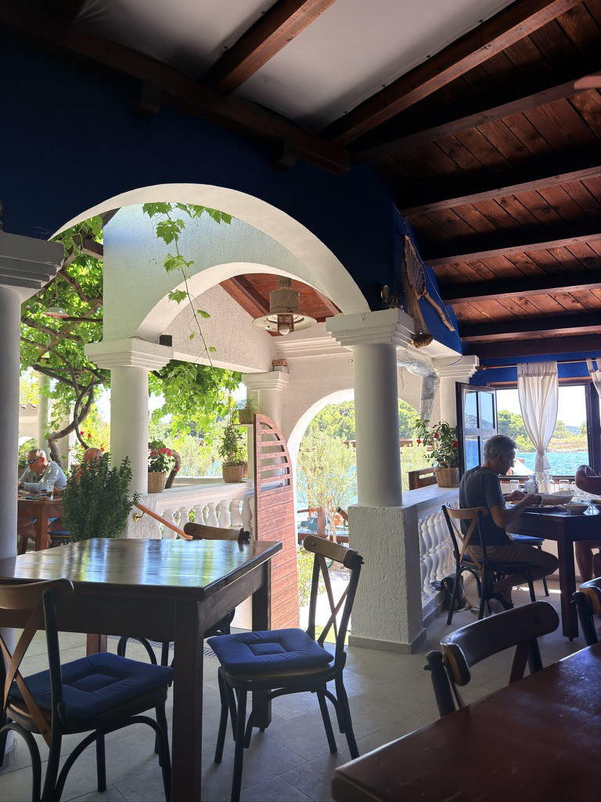
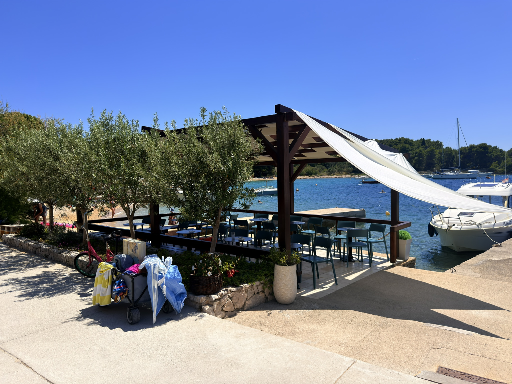
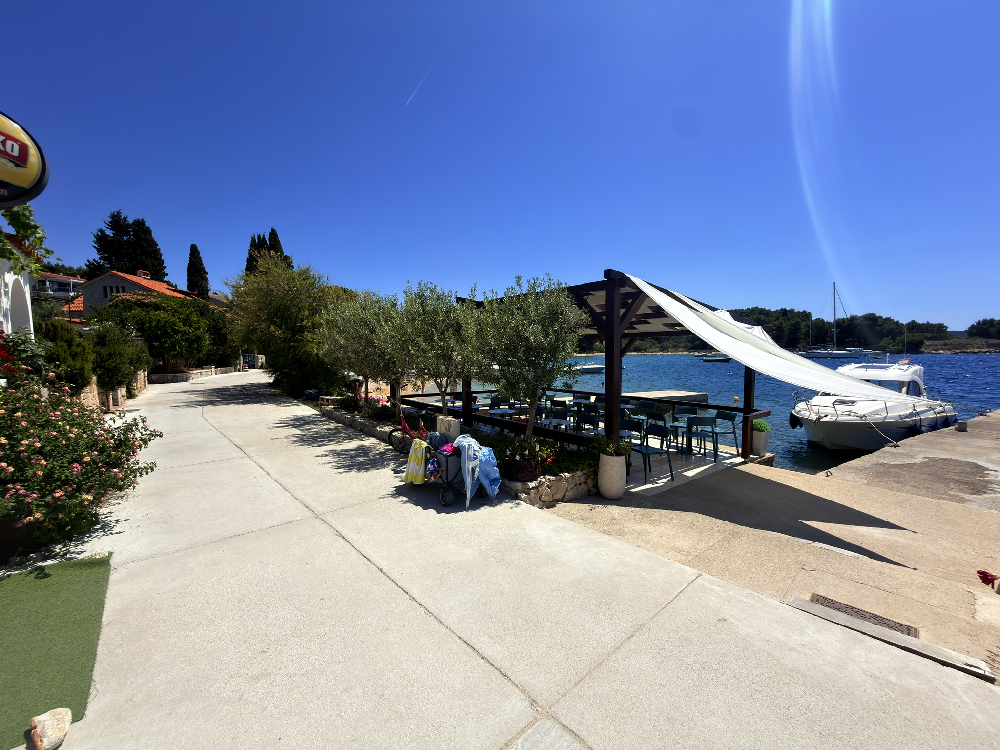
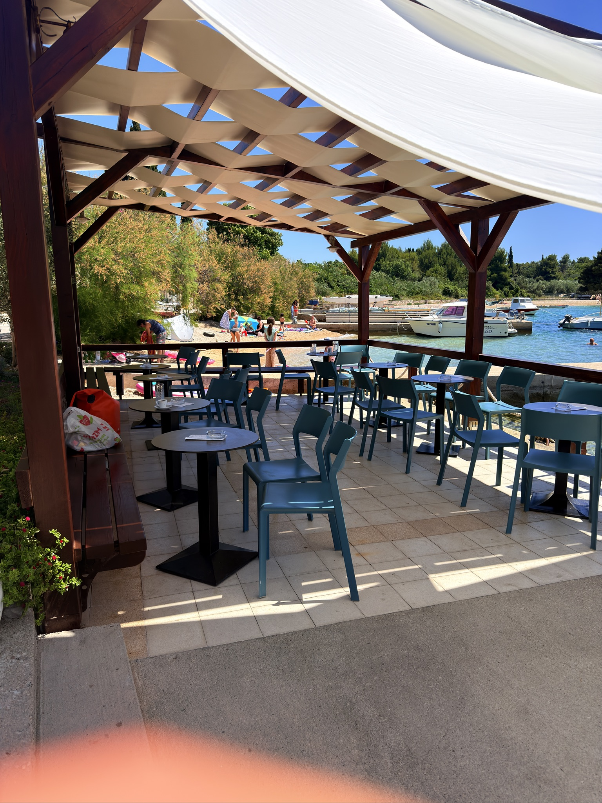
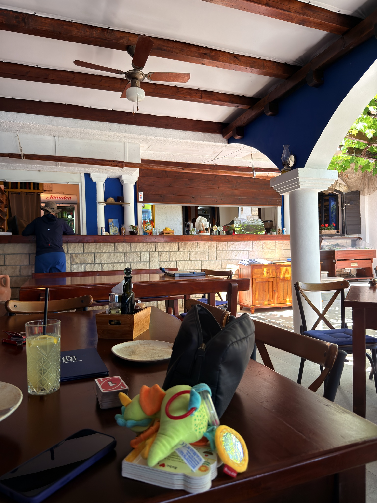
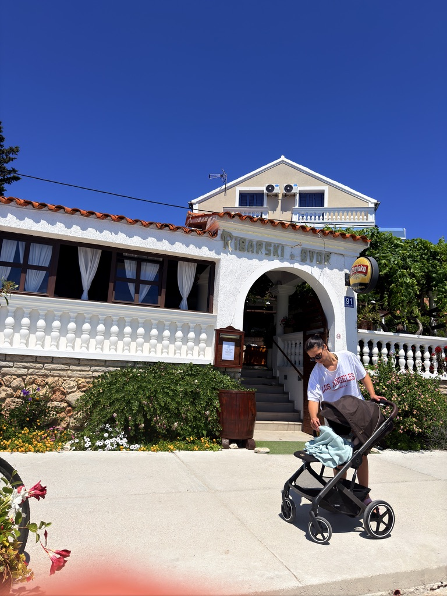

Obiteljska konoba · od 1981.Family tavern · since 1981Familienkonoba · seit 1981
Terasa na samome moru, svježa riba i jela s gradela — na otoku bez automobila, do kojeg se dolazi brodom ili trajektom. A terrace right on the water, fresh fish and food off the grill — on a car-free island you reach by boat or ferry. Eine Terrasse direkt am Meer, frischer Fisch und Gegrilltes — auf einer autofreien Insel, die Sie per Boot oder Fähre erreichen.
Naša pričaOur storyUnsere Geschichte
Ribarski Dvor obiteljska je konoba u Prvić Šepurinama, smještena u mirnoj uvali Trstevica, na samome rubu mora. Vodi je obitelj Cukrov — već više od četrdeset godina, iz iste kuhinje i s istim mirom.
Ribarski Dvor is a family-run tavern in Prvić Šepurine, set in the quiet Trstevica cove, right at the water's edge. The Cukrov family has run it for over forty years — from the same kitchen, at the same unhurried pace.
Ribarski Dvor ist eine familiengeführte Konoba in Prvić Šepurine, in der ruhigen Bucht Trstevica, direkt am Wasser. Die Familie Cukrov führt sie seit über vierzig Jahren — aus derselben Küche, in derselben Ruhe.
Pod lozom i bijelim kamenim svodovima, uz domaće maslinovo ulje i ribu koja stiže ujutro, vrijeme teče sporije. Ne mijenjamo ono što već desetljećima dobro radi.
Under the grapevine and white stone arches, with our own olive oil and fish that arrives each morning, time runs slower. We don't change what has worked well for decades.
Unter Weinlaub und weißen Steinbögen, mit eigenem Olivenöl und Fisch, der jeden Morgen ankommt, vergeht die Zeit langsamer. Wir ändern nicht, was seit Jahrzehnten gut funktioniert.

Kako do nasHow to reach usSo finden Sie uns
Prvić je otok bez automobila. Doplovite vlastitim brodom i privežite se na jednu od naših bova u uvali, ili dođite trajektom iz Vodica i Šibenika — pa lagana šetnja rivom do stola. Prvić is a car-free island. Sail in and tie up to one of our buoys in the cove, or take the ferry from Vodice and Šibenik — then a gentle stroll along the seafront to your table. Prvić ist eine autofreie Insel. Kommen Sie mit dem eigenen Boot und machen Sie an einer unserer Bojen fest, oder nehmen Sie die Fähre ab Vodice und Šibenik — danach ein kurzer Spaziergang an der Uferpromenade zu Ihrem Tisch.
Četiri vlastite bove u uvali Trstevica. Najavite dolazak telefonom i sigurno smo vam čuvali vez.Four private buoys in Trstevica cove. Call ahead and we'll keep a mooring for you.Vier eigene Bojen in der Bucht Trstevica. Rufen Sie an, wir halten einen Liegeplatz frei.
Vodice – Prvić – Zlarin – Šibenik. Iz Vodica ste na Prviću za dvadesetak minuta.Vodice – Prvić – Zlarin – Šibenik. From Vodice you reach Prvić in about twenty minutes.Vodice – Prvić – Zlarin – Šibenik. Ab Vodice sind Sie in etwa zwanzig Minuten auf Prvić.
Auto ostavite na kopnu u Vodicama, a ostatak puta je morem. Otok je samo za pješake.Leave the car on the mainland in Vodice; the rest is by sea. The island is for pedestrians only.Lassen Sie das Auto in Vodice auf dem Festland; der Rest geht übers Meer. Die Insel ist nur für Fußgänger.
Iz naše kuhinjeFrom our kitchenAus unserer Küche
Jelovnik se mijenja s ulovom i sezonom. Ovo je presjek onoga što najčešće stigne na stol. The menu shifts with the catch and the season. Here's a taste of what most often reaches the table. Die Karte wechselt mit Fang und Saison. Hier ein Auszug dessen, was am häufigsten auf den Tisch kommt.
GalerijaGalleryGalerie






Glas gostijuGuest voicesStimmen der Gäste
Predivan ugođaj i pogled na more, svježe pripremljena hrana. Vraćamo se brodom — sjajno mjesto!
A really good ambience and view over the sea, fresh cooked food. We'll come back by boat — great place!
Eine wirklich schöne Atmosphäre und Aussicht aufs Meer, frisch zubereitetes Essen. Wir kommen mit dem Boot wieder — toller Ort!
Izvrsna hrana i iznimno ljubazno, susretljivo osoblje. Besprijekorno čisto, uz prekrasan pogled.
Excellent food and extremely friendly, helpful staff. Spotless, and offers a stunning view.
Hervorragendes Essen und überaus freundliches, hilfsbereites Personal. Tadellos sauber, mit traumhafter Aussicht.
Ugodan i topao restoran tik uz vodu. Tuna odrezak, pržena ribica i vongole bili su vrhunski.
Pleasant and cozy restaurant right by the water. The tuna steak, fried small fish and vongole were over the top.
Angenehmes, gemütliches Restaurant direkt am Wasser. Thunfisch, frittierte Fischchen und Vongole waren spitze.
Rezervacije i kontaktReservations & contactReservierung & Kontakt

Radimo kroz toplu polovicu godine. Izvan sezone i za veće grupe javite se telefonom.We're open through the warm half of the year. Off-season and for larger groups, please call ahead.Wir haben in der warmen Jahreshälfte geöffnet. Außerhalb der Saison und für größere Gruppen rufen Sie bitte an.